|
The Funding Environment for Startups May 16, 2013
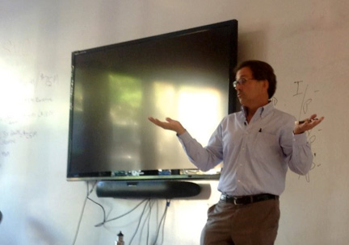 Our speaker today was Andy Chase, an investing expert who works at Morgan Stanley as a financial advisor. He went to Stanford for his undergraduate work. And he wears a phone on the outside of his belt. He is definitely a high-end executive in the financial industry. I was impressed by his smooth demeanor, clarity of thinking and direct communication. It’s interesting that a man would have such clean-cut and sharp characteristics given that he works in such an uncertain environment as investing.Andy spoke about the types of investments available to people: stocks and bonds corporate bonds, national bonds, real estate investments, pension funds, venture capital, private equity, and just simply saving your money in the bank. Basically, people seek to do better than bonds. Bonds grow at 2% per year. In the past 10 years venture capital has not been performing well, and many pension funds are starting to pull out their venture capital investments. This “drying up of funds available” is starting to damage the funding environment for startups and slow growth of new innovations to gain market share in the economy. Andy spoke about the important economic realities when running a startup. Fundamentally, a startup needs to keep the cash burn rate down. Start up CEOs need to do everything in their power to prevent spending money. Get people to do work without spending any money. Develop equity instead of cash. Don’t let your business run out of money. Running out of the money is what will kill your business in the end. This is why businesses choose to operate out of a garage. They are trying to keep their cash burn rate low. You also need to concentrate on keeping your marketing expenses low. Yes it’s necessary to spend money on the product. But, it’s best if your product will do so without any cash being spent. You’ve got to do sales. And it’s not easy to double your sales. When you double your sales you often need to revamp your organization and take on new costs and expenses. It’s much better to just keep your burn rate low. Stick to just 5 computer science guys. Live out of a dorm room at Stanford for as long as possible. It’s only when you find a working business model that shows repeatable scalable success do you want to ramp up, scale up and take on large market share. This is my take away. Raising money from venture capitalists comes with a serious cost. You can lose control of your company when you take on the venture capitalists. If you don’t grow fast enough, the venture capitalists may fire you. So from the entrepreneurs’ perspective, it’s best not to take on venture capital until you’ve got a proven product and showing growth. Because these VC investments could lead to you losing your job. So just keep cash burn rate low so you don’t need that extra investment money. When raising money it’s a zero sum game. Equity needs to come out of someone’s hide. When new investors come in shares get taken away from the founders. And that keeps happening long enough the founders will have incentive to keep on working. Because, they will not be rewarded when there is a sale of the company or an IPO. When you look at a company, you need to think like an investor. You have to show that you will return on investment more than just buying a bond or corporate bond like GM. This investment must be worth your time and energy, otherwise it’s better to just let that money sit in a bond where you don’t have to do any work at all and it will be safe to take out once that bond matures. Furthermore, as the founder of a startup, seek to pay the founders very minimal salary. This minimization of cash expenditure will reduce your risk and give your business a longer lifespan before the company runs out of time. Often times in companies and startups, you need to pay that to different products in different customer profiles. Having a long cash runway gives you the time you need to make these changes and discover your product market fit. Helping Millions of People Through Technology May 15, 2013
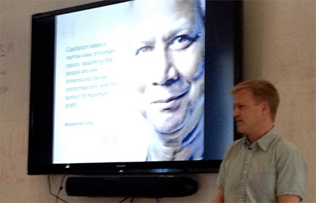 Today, our speaker was Matt Flannery, co-founder of Kiva. Kiva is a website that provides micro-finance to millions of people living in poverty throughout the world. Kiva spends about $15 million per year to operate. In terms of its revenue, the website raises $9 million a year through tips, and receives $6 million per year by donations. Kiva serves 60 countries and historically focused only on the developing world.However, lately, Kiva has been experimenting with providing microfinance loans in the developed world, including the United States. In fact, one of our Draper University classmates received such a loan to support him in his music work. Jacob received a $3,000 loan to support him in buying music equipment so that he could develop his skills further as well as share them with others. The people that gave him this money had a very strong interest in music as well and were interested in developing the field further and supporting him as an artist. One of the reasons that Matt decided to expand Cuba to support the United States was that this would serve as an early adopter mechanism to grow U.S. users. Americans might go to Kiva to try to get loans themselves. They would have a very positive experience and want to use the service further to help poor people living in developing countries. Let’s talk a bit about the history of Matt founding Kiva, because I feel that this story connects so much with my own, and it inspires me to want to build a service that has such a broad impact on the world. In 2004, Matt attended a talk at the Stanford graduate school of business by Mohammed Younis. Mohammed talked about living in Bangladesh after having his PhD awarded to him. He was so proud that he had an economics PhD when he arrived back in Bangladesh. Yet when he would look around him in Bangladesh and poverty, his PhD did him no good. He had no power, he thought, to help improve the lives of these people. He would sit in his fancy office, and yet people around him in the surrounding cities were literally starving and suffering from deprivation. He got serious about this problem and decided to walk out and talk to some of these people suffering in poverty. He discovered that many of these individuals were in fact highly motivated and ambitious, wanted to achieve and improve the world and improve their own lives. Yet they were stuck in a cycle of poverty and could not get out. For example, Mohammed spoke to a basket weaver. The basket weaver worked all day to create beautiful products and market these products on the streets for sale. Yet, the Weaver suffered from indebtedness to creditors. He needed to borrow money to get the supplies to make the baskets and if he was lucky he would make just pennies for his work. The solution was to get a loan, just a small like micro-loan, so that this basket weaver would not be dependent on the local creditors. Mohammed decided to give this basket weaver the money himself and to see of the basket weaver would pay back. The basket weaver did pay back. With Mohammed’s graduate students, they started perform experiments. If micro want loans were given out to very poor people, they wanted to see if they would pay back. Mohammed performed more tests at larger scale. All of the poor people paid back. Mohammed repeated this test over and over with larger and larger groups of poor people, and they all paid back. Mohammed took this concept of microloans to local banks to try to encourage them to perform the same types of loans to people who were poor. The banks refused because they said that these poor people would not pay back. “They have bad credit they won’t be back. We cannot give them alone.” These banks would not budge despite evidence to the contrary. So Mohammed decided to take a personal loan so that he could raise the money to give microloans to many thousands of people. They all paid back. Yet, the banks still would not proceed forward with microloans. Mohammed Younis decided to make his own bank, the Grooming Bank. And the focus of this bank would be to provide microloans. Mohammed Younis scaled this microloans bank to thousands of people in Bangladesh. Furthermore, Mohammed Younis told the stories of microfinance in travels throughout the world. It’s this story that inspired Matt Flannery to start Kiva. Matt wanted to change the world. Mohammed Younis’ story served as the proof of concept for the Kiva website. Matt went on to scale this micro-finance service to millions of people through technology in a way that Mohammed Younis only dreamed of. Outsourcing May 14, 2013
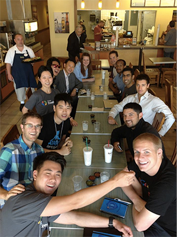 I incorporated my company in the last few days and today I got the EIN number for tax purposes. I’ve outsourced most of the technical work to a team in Russia and worked with my friends at Stanford and at DU on only a few technical problems that require more of a hands-on approach. I understand the risk associated with outsourcing. There is a danger that in the end you cannot completely own your product so if you are outsourcing the development of your product, you need to know your legal rights and have an exit plan on when and how to have your local team take over (it might be necessary). I’m wishing to build an MVP using outsourcing method and forming my local technical at the same time. We will see how that goes.Andy Tang from DFJ Dragon, an advisor of ours, took a bunch of us to lunch today. Many of us also had lunch time with Tim and Adam Draper. Very thankful for their time and effort in listening to our concerns and helping us developing our projects. Tim has spent almost all of his working hours in the past a month or so with us, driving the program, teaching us fundamentals and helping us with any questions. Andy, besides being a team mentor, also opens office hours for anyone who wants to chat with him. This is not an opportunity you can easily get anywhere else. Thank you DU! Understanding the Customer May 13, 2013 Aaron Ross spoke to us about sales growth. Aaron is the author of Predictable Revenue, a book about the techniques he used to grow revenue for salesforce.com by over $100 million. Aaron developed some simple but very effective techniques to make sales and increase company revenue. I took very careful note because I intend to utilize the skills for my own business. One of the key take away points that Aaron made was that learning is more important than results. Sales is an iterative process. As a salesman, you need to test different approaches with customers and discover a method that works. Once you find a method that works, repeat it! You want to find a repeatable business model that will work over and over so that you can scale the business into a billion-dollar money machine, like salesforce.com. One of the interesting aspects of Aaron’s life now is that he no longer works the 9-to-5 job. He made some money through his sales work with salesforce.com, but not enough to retire for the rest of his life. And now, he is still working but not in a conventional sense. He is freelancing, rather than working as an employee at a large company. As a freelancer, he is doing consulting work with companies to help raise their sales and revenue. Furthermore, he said that he will be traveling to China very soon and adopting a new child. Aaron told us that he attended Stanford University for his undergraduate studies and had joined a fraternity, KA. It’s funny. Tim Draper had also attended Stanford University and was also a member of the same fraternity. Maybe they are blood brothers!? LOL. Another important approach when doing sales is understanding the customer in detail. Aaron advocates that we, as entrepreneurs, describe our target customer in detail. Pick just one person. Understand and describe that person in as much detail as you possibly can. Identify the gender. Identify where the person lives. What type of software does this customer code in? Write down everything you can possibly think of. Honestly, you will discover that these descriptive details are just guesses! You in fact will discover that you have no idea who your customer is. In fact, it’s not until you go out into the field where the customers live that you will actually be on able to understand these customers. The key point is that you don’t guess about customers. Instead, you go to where the customers live, and experience their lives by talking with them and understanding their needs and characteristics. By making this research effort, you will be light years ahead of your competition because many companies just simply stay in the office building, hiding behind a computer, and not actually get out into the field and talk to real customers. Talking to real customers can be a key competitive advantage that may seem so obvious and yet is very rarely practiced by budding entrepreneurs. Another important takeaway is that customers can serve as very valuable sources to generate even new customers. When you sell your product to a customer and discover that they are happy, don’t hesitate to ask these customers for referrals to their friends. These referrals can be extremely powerful to persuade new customers to make the purchase, far more than any story or script that comes out of salesman’s mouth. In the end of the day, when dealing with customers, we envision this as our ideal scenario. 1. You find a customer. 2. He pays you money. 3. He’s happy. You understand why he’s happy. 4. The customer keeps paying you money and using the product. That’s a successful sales process! Entrepreneurs and Sales May 10, 2013 Armando Mann, our speaker today, focused on sales, specifically building a low friction acquisition engine. Armando worked at Dropbox for the past few years, leading their sales organization. Armando has a Harvard MBA and is really a business guy at a very technical company. Prior to Dropbox, Armando worked at Google in sales. Google is the most well-funded startup in history. Armando wanted to work at Google in order to see what a successful startup looked like. He planned to begin his career here at Google and then grow into a new startup from its early days and inception. Armando’s projects at Google included Google offers and Google tax. Google tax was a failure and nobody has ever heard of it. Google offers, similar to Groupon, was also not particularly successful and is now in “survival mode.” Armando’s time at Dropbox focused on Dropbox’s enterprise sales deals as well as user growth through referral urls. Armando is now working at Relate IQ. He had just joined 7 days previously and he is focused on starting the sales team. One of his primary objectives is to measure sales success so that they can effectively measure the performance of each sales team member. This startup is 2 years old and has been working on a CRM product. The product is nearly ready for launch and that is why Armando has stepped in to lead the company in building out its sales strategy and revenue growth. Some of the topics that Armando covered included lead generation, sales acquisition, and growth “expansion.” The job of the salesman is to maximize the number of happy users. Fundamentally the CEO of a company is a salesman. The CEO needs to sell equity to investors, equity to employees, and product to customers. How does one effectively conduct lead generation for sales? One important consideration is the social networks of your customers. You need to understand your customers’ lives in the social network tools that they use. Just because you are on Facebook, that doesn’t mean your customers are also on Facebook. For example they may be living on LinkedIn. Or, you may be totally unaware of this social network that the customers are using. For example, IT professionals live on a social network called “spice works”. So, to be effective as a salesman you need to go where the customers are. Then attempt to cultivate organic traffic as a means to generate leads.
Highly effective means to achieve this is stimulating word-of-mouth as a means for customer to customer referrals. Furthermore, PR and analyst relations can help to get the word out about your service and products. Direct referrals from existing users and customers are useful. Integrating “viral mechanisms” and your product can be a key way to drive user growth. For example, dropbox incentivizes users to refer their friends by giving free cloud storage space to users when their friend sign up with a referral code provided by particular users. In such cases, both users end up happy. The referral source gets additional storage space. The new user gets to benefit from the dropbox product. Furthermore, when the referral process takes place, the referral user serves as a “tutor” to explain the product and guide the new user through the process to use their new storage space. Such a tutor is extremely valuable for dropbox because it comes from a trusted source, a friend, and this person is knowledgeable clearly about the product enough that he finds it useful enough for it to be desirable for him to get additional storage space. Other means to generate leads include SEO, search engine optimization. Also social chatter, such as on Facebook or salesforce.com chatter can drive in traffic. Companies might also consider performing product promotions to gather interests from users and customers.
Why Business Networking Matters Tuesday, May 8, 2013
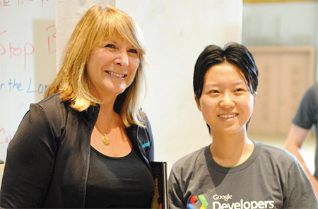 Heidi Roizen spoke to us today on the topic of business networking. Heidi is a professor at Stanford in Management of Science and Engineering. She had actually attended at Stanford as an undergraduate, and, in fact, lived in the same dormitory as Tim Draper. Some of our classmates asked her to describe Tim as undergraduate and she had some really funny stories. Apparently, as an undergraduate living in Log, Tim Draper announced himself as the dorm king. Even as a young man, Tim was obviously highly ambitious as well as a big achiever. Now. On to the teachings. Heidi first explained why business networking matters. Basically, you need to get help from other people in order to achieve your goals in business. Other people hold opportunities. You need to ask these other people to give you their resources and open doors of success for you. It’s only through business networking that he can reach these people that hold opportunities and resources and persuade them to help you to achieve your business goals. Furthermore, sometimes bad things happen to you. And, in these situations, you need help from other people to get through these tough events and move on to a more stable life to proceed forward with achievement. You may lose your job. You may get fired. You may get a divorce and need serious emotional support. All of these things can be better overcome with a strong business network in a tight group of friends to support you through these down times. So, it’s important to continually reinvest into your business network. Call these friends you made at Draper University 10 years ago. You’ll plan on living a long time and no one will pay you to invest into these relationships. You got to take the initiative yourself. Furthermore, you need to develop a system that helps you to initiate these communications on a regular basis. One way that Heidi loves to get into the habit of maintaining contact with old friends is by sending out an annual Christmas card. But, it doesn’t have to be on Christmas. Maybe you’re actually too busy on the day of Christmas. Instead, you can choose to send out your annual letter to your business contacts on Groundhog’s Day, for example. It doesn’t matter really. You just need it regularly stay in contact with these people. Furthermore, you need to keep a record of their contact information. Have some kind of Rolodex where you can access again the contact information of these people. Another useful technique to network is by sending out thank you notes as much as you can. For all of the speakers that come to speak at Draper University, send a follow up thank you e-mail. It doesn’t have to be a physical note. Also it could be simply a social network Facebook message. Just some kind of thank you. The speaker will have a positive memory of you when they think about you again. And, if you ever contact the speaker in the future they can look back at their e-mail history and see that you had previously contacted them and that you exchanged this very pleasant thank you. When you do business networking, follow some of these practices to make the process go smoother. Make yourself easy to find. For example, on your e-mails include a signature block with your contact information. Allow people to easily reach out to you to open up new doors of opportunities and provide resources. Make yourself easy to help. For example, students at Stanford sometimes approach Heidi with requests for introductions to venture capitalists such as Tim Draper. Heidi wants to help. However, if students ask for this help and do not provide additional materials to assist in this process, Heidi has a hard time making these introductions. She doesn’t want to spend a lot of time preparing materials for introductions. Heidi would like to have, for example business plans already prepared and even introduction e-mails already prepared so that she can simply forward these materials onto an investor. For example the LinkedIn forwarding tool is quite useful for such introductions.
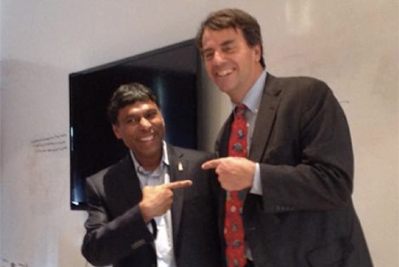 This morning when we woke up, an email from Tim was already in the mailbox. It read like this: “Make sure you always have an alternative to whatever you are trying to get someone to do for you. Have other investors, other suppliers, other customers, etc. In mind whenever you are selling. Relying on a single person or business to make it all work puts too much pressure on that person or business, or if they say ‘yes,’ it gives them too much power over you.” I think this was terrific.I felt so inspired by the speaker today, Naveen Jain. Naveen was born in northern India in a poor village. He was surrounded by poverty. Yet, Naveen study hard and went on to college to study engineering and business. He moved to the United States through a business exchange program and eventually joined Microsoft as a senior executive. He decided to send out on his own on his own entrepreneurial venture and he started a company called InfoSpace. Taking the company public in 1998, he led the company as CEO and became a billionaire. He also has started a couple other companies including Intelius as well as of space exploration company called Moon Express. It’s so incredible to see a man come from such a poor and deprived situation and then to literally develop into an industry powerhouse who launches rockets to the moon. The life of Naveen demonstrates that anything really is possible and that many are limited only by their imagination. When Naveen was introduced by one of our classmates, he stated a quote that really resonated in my heart. I like to just write it here to share with others. This quote comes from Naveen’s own writings about his early days and his own strength and will to overcome these challenges. “Because I was poor, I had one special advantage. When you are poor, and basic survival is your concern, you have no alternative but to be an entrepreneur. You must take action to survive, just as you must take action to seize an opportunity.” It’s kind of funny. Naveen told us what it takes to become a billionaire. It’s simple actually. He posed the question: how do I start a $1 billion company? The answer: start a company addressing a $10 billion market! So simple isn’t it :-) Naveen gave us some advice in our entrepreneurial journey. He said, “Changing people’s hearts is difficult.” It’s better to solve an existing problem rather than trying to search for a problem and application of new technology. Solve an existing problem of the customers. Then go out and show the customers what you can do. When Naveen makes an angel investment he expects to put in $500,000 and get $15 million in return. That’s a 30 X return on investment. It really takes passion to win in business. It’s not really about the idea. It’s really about the people and energy within their hearts to succeed and their deep desire to go out and improve the lives of customers and society. So he challenged us to go out and find out what we are really passionate about. Once we find our passion, focus on it! Sure. You can pivot. As you talk to customers, and find out what they want you may need to really change the direction of where you’re going in your company. You have to be adaptable. It takes it certain amount of humility and lack of pride in order to have the strength of will to adapt. But in the end this change is okay. Because it’s through this customer feedback that you discover what they really want. Recognize when your idea didn’t work. Then change. It’s not a failure. You can be proud that you tried. And continue on as an entrepreneur. There are many problems out there that need entrepreneurs to address them. Naveen concluded with some insights about the educational process. He envisions that education will be deeply changed in the coming decades. The current educational model was designed for the industrial system, where people are basically passed through a conveyor belt of grades and benchmarks and education. Yet, people are not simply machines like automobiles to be passed along the conveyor belt from station to station. Such a process does not take into account the full depth and internal energy and intrinsic motivation for learning and love of life. Naveen believes that recent technologies such as the Internet and mobile devices will transform education to be a more “on demand” learning model to allow people to become ultra-specialized and gain knowledge in a very deep way without be in held back by normative processes and the lack of resources to enable these students to achieve such specialization in depth and knowledge. This will create a massive change in the educational system. Yet, such a change will be good for all of society because we will better utilize the skills talents and passion and energy of people so that they can contribute their skills to the betterment of society.
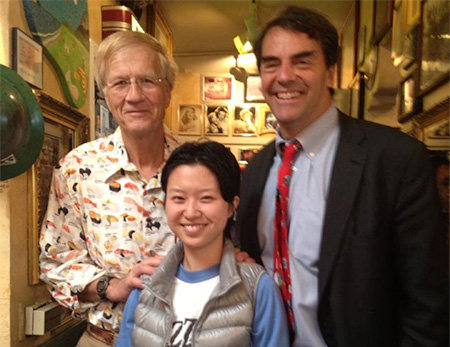 In this small place called Silicon Valley, a lot of important business decisions were made over a brunch or a cup of coffee. Buck’s Restaurant has been where many of the most legendary of these activities took place. A few days ago, Buck’s owner Jamis came to DU to give us a talk on the advantage of starting up companies in the valley. Today, we were invited to experience a morning starting with a busy breakfast at the Buck’s. The restaurant is small, comfy, filled with interesting souvenirs and away from the busy hustle of city-life, perfect for making a deal for a startup.
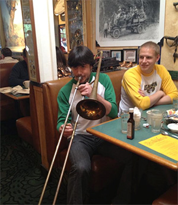 Before we dined, we did our usual morning hero oath proud and loud. We got a lot of customers to stop and listen. This was a declaration to the entire valley community that a new force on a new mission is coming into play and we will play hard and just. Buck’s was much more than a restaurant. It was more like a mini-museum where old and new history took place. My table was where Hotmail and PayPal got funded. I was wishing that I would one day make history as well. But make it bigger and more thorough than them—that is what the improvement of technology allows us to do as latecomers.After leaving Buck’s, the bus drove us to Golden Biersch brewery, much to my surprise. I was surprised because we knew that Tim doesn’t drink and we are not allowed to drink on campus at DU. Tim, however, funded a brewery company and is proud of their American-made German-taste beer from the Bay Area.
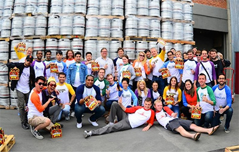 It was an interesting experience to see the founder himself explaining how he turns his personal hobby (beer drinking) into a highly profitable business. In the end, we all got a package of beer as a gift. Of course, we are not allowed to drink alcohol on DU property, so everything will be saved for the celebration party off-site after the program is over.How to Master Your Life Sunday, May 5, 2013
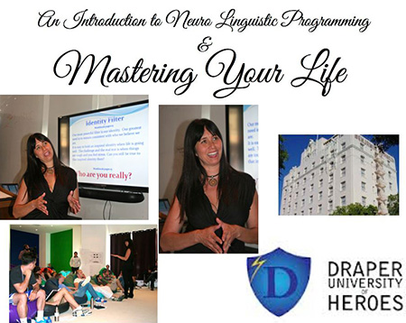 Today we had a whole day’s workshop by spiritual guru Gina Kloes on how to master your life. Gina brought up a lot of very interesting points. As I am short on time to write this blog (I have to do all the requirements at DU, start a functional company, participate in survival training, go to Washington DC for a conference and write this blog all within 8 weeks), I’ll again use bullet points to organize her thoughts. 1. See everything as if you have first seen it. Hear everything as if you have first heard it. Don’t classify things as “oh, I’ve heard of it before.” Because if you do so, you will never hear the intended meaning of the most important things. Don’t see people as he or she must be this or that type, because otherwise you will never truly get to know these people. It’s confirmation bias. 2. We do not perceive reality, merely our model of that reality. People experience life not by what is actually in the world, but rather by their internal model of the world. You are what you consistently focus on. Where focus goes energy flows. If we call our internal model of the reality our mental map, remember the map is not the real territory. But it is an important deciding factor to approach our territory. We have different maps in our minds in different context in life, but none of these maps are actual experience. These maps, however, are indicators of how we want our relationships to happen. These maps filter, distort and generalize information from the moment we perceive it. When life doesn’t go according to your mental maps, stress is created. Gina believes that people who are the most flexible win because they can get beyond what other people can. 3. “I am” statement is a big map in your mind, which dictates some of the most important aspects of your life. Our most powerful filter is our identity. Our greatest need is to remain consistent with who we believe we are. This identity however is a belief that can be created and molded according to our needs. In other words, we are truly in command of our destiny. Quoting Channing Pollock, “The only good luck many great men have ever had was being born with the ability and determination to over come bad luck.” Only experience is learning, and everything else is information. 4. People do not care how much you know until they know how much you care. This is a very important point that many of the greatest minds know very well. We humans are not supposed to live alone. If you want to achieve greatness, you must have a great heart and be able to communicate your great love to those who support you. I think what Gina is talking about here is if you communicate love, you will receive bountifulness, but if you communicate fear and mistrust, then everything can go wrong and out of control. It’s not just about having love. Communication is equally important. You must not be afraid of yourself or of others to want and be able to express your love and trust. My takeaway from Gina’s session is mostly on self-mastery. The manifestation of reality or the life you create is within the control of you and your mind. What goes on in your mind in my understanding is a constant adjustment and readjustment of what you believe is most likely to happen, but that belief must come before reality. It either comes in the form of repeated message you hear from some external voices that eventually internalize into your self-belief, or it can generate from or perception or misperception of what is and has been going on in our lives so that something about ourselves in relations to others must have been true. It is a constant struggle against our natural instinct to make sweeping generalization about ourselves and about the world that shortens our brain’s processing time but may create a series of self-limiting beliefs and the ability to re-create beliefs against old-beliefs and thus remake our lives. The best people in life are never those who allow “fate” to take over their lives. They are the ones who make their “fate” or create their own reality. Which type do you want to be? Make it happen. Friendship Saturday May 4, 2013
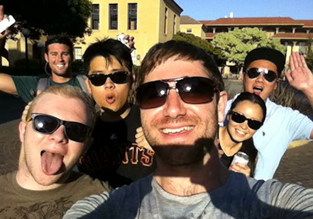 Since yesterday we went to San Francisco, many of us didn’t come back until very late. We were scheduled to have almost the entire day off. I realized from one understated comment on Facebook that our Blizzard superdad Ahmed is turning 30 today. I prepared him a small birthday cake and had a lot of Draper heroes celebrating his birthday at the TED talk in the afternoon. I didn’t hide it well enough from him to have the surprise effect, but it was nice to see him beaming with happiness either way. Ahmed has not been actively participating in some of our group activities lately and missed a few talks and meetings that generally everyone attends. He seemed to be a little stressed out about something. I think he might be missing his family and kids (he is a father of three). Coming from a different background (he is Egyptian, older than us, married and has started companies) and being an introvert, he might observe and understand the world in a different way than some of us who can’t seem to stop talking and feel relatively comfortable speaking to strangers in any situation (like me). I really hope he feels loved and supported by everyone here, especially on this special birthday.At the TED talk where students gave 3-minute speeches on things they feel passionate about in their lives, Monsieur Gregory Marchand delivered a very interesting talk about his passion for traveling in Southeast Asia, exploring culture and meeting local people. Greg’s idea was that if you don’t plan and just go with the flow and meet people in places where the locals go, you are more likely to understand the culture better while maintain a low budget for your trip. He had met host families after immersing himself in a culture, supported their businesses, provided electronics and computers to the locals and helped them to find jobs, etc. I think he can potentially start a business that helps bringing local families in the developing world to the center of facilitating tourism and international exchange. This can benefit both the locals and lower the traveling costs for international travelers. It conveniences both parties if it’s done well. I can also see him working with non-profits or benefit corporations. For those matters, perhaps Greg can work with Ari Eisenstat, another Draper U hero who is enthusiastic about social work. (PS: I love connecting amazing people together to see them making incredible things happen.) Later a bunch of Draper U students decided to go visit Stanford. Greg and I cruised to the farm to meet a dozen people at the Tree House. It was at Stanford that I realized how much I’ve changed since I came to Draper U two weeks ago. Even though I just saw many of them two hours ago in San Mateo, I already missed them. When I met them again at Stanford I was genuinely excited. In a very strange way I feel I bound closer with my Draper U friends than with my Stanford friends, even though Stanford has been one of the best experiences in my life. It’s the kind of camaraderie that you can’t replace with anything else in the world, and I know in the future if there is a reunion, I will travel across the whole world to just meet these people. We pushed each other so hard; we helped each other out; we got out of the comfortable zones doing some of the most challenging tasks; we dreamed together and failed together; we lived in the same house or even the same room to see our biggest personal transformations to happen. This is genuine friendship.
Painting, Branding and a San Francisco Giants Game Friday, May 3, 2013
At 10 o’clock in the morning, we were all assembled in the breakfast room, not to eat brunch, but to paint. Established Bay Area painter and artist Stanley Goldstein came to show us how to create art from a brush. Stanley taught us that artistic characteristics are created through space. The curves of your objects are creating tension against the piece of paper or cloth you are painting on. Relativity and space is what allows the objects to tell their stories. Art is not generic because it captures a moment of emotions and can express those emotions by itself to the viewers who were not there at the particular moment when this moment of feelings was captured by the artist.
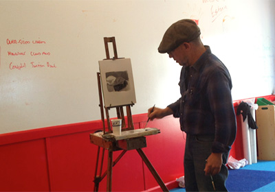 Painting was surprisingly soothing, and it gives you a lot of confidence because you are constantly discovering something about the world and about yourself that you didn’t see before. I was quite hesitant at first to put anything on the white paper, afraid that I would ruin it from the start. Stanley said we don’t ever need to worry about perfection. Actually, the process of art making has to start from imperfection so that you can keep making revisions until you are satisfied. You can always layer it if you are unsatisfied. “Fail and fail as you succeed,” Stanley said, “just as you pledged to do so in entrepreneurship every day at DU.”All heroes were asked to draw a painting of two particular beanbags on the floor. Because we were sitting in different locations and because we naturally saw things differently, the paintings came out so dramatically different. But for most of us first time painters, these paintings looked impressive!
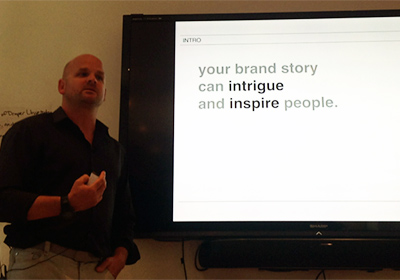 The afternoon session is about branding. The message is your brand should tell a coherent and convincing story. This goes much beyond what service or product you are selling. It’s about your identity and what you stand for. It should include what problem you are solving, what values you bring to solve this problem (don’t get into details) and who you are in two to three short sentences.In the evening, all DU heroes went out on Caltrain to get a job or a job interview on the way to San Francisco and look for a few designated places to visit in the city (they are so far apart it was almost impossible to get to all of them since we left DU at around 6pm). The Blizzards decided to have a little fun while trying to finish our assignments (potentially in the most creative way). I managed to speak in basic Japanese with a Japanese politician on the Caltrain and secured a job to help him with English and connect him with policymakers on Japanese issues at Stanford. Greg and Zohar decided to create jobs for themselves. Greg would be somebody’s shoe shiner for one dollar per pair of shoes in the financial district. Zohar would stop people to teach them about 3-D printing to hopefully get some dollars. The boys’ ideas didn’t work so we decided to go for Tim’s location assignments instead. The first stop was Chinatown. We went there feeling very hungry so we took a few pictures for the assignments and looked for cheap Chinese restaurants. I don’t know what happened, it seemed that all the restaurants we went to were extremely expensive. Actually it might have been the most expensive cheap-looking meals any of us ever had. Therefore, Alex decided to offer the owner of the most ridiculously expensive restaurant the opportunity to hire him so that he could help them get more customers and price right (Alex studied accounting in London). The restaurant owner turned him down as he doesn’t speak Chinese and he doesn’t have a working visa. It was a lot of fun seeing Alex making the effort though. Later at night, part of the Blizzards team went to see the Giants vs Dodgers game. That was so amazing!!! At the game, I discovered from afar there was a light that says “Ghirardelli.” We were supposed to go to Ghirardelli (the square), so I took a picture of that on my seat of our “Ghirardelli” (the ice-cream place). Bingo! Planning for the Long-Term Thursday, May 2, 2013
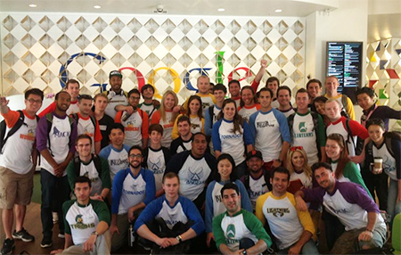 We opened today’s program with a talk on sustainable business training by Martin Tantow. This lecture has been one of my favorite lectures so far. Martin gave us a very throughout roadmap on structural preparation to take the startup to the next level of sustainable development. As you probably can guess it, I am all about long-term planning and making big dreams come true, so I’d like to pay a million bucks from the start to hire and keep people like Martin to be on my team.Every day there are about 137,000 startups getting funded and 12,000 startups getting dissolved in the entire world. That means nearly 88% of the startups fail after getting funded. Worse yet, about 87% of the failed companies fail under manageable control. Startups generally run too quickly into the middle ground where everyone is doing everything and nothing is structural planned well for the long-term. But let’s think about it strategically. If you have reserved some energy and manpower for the next few steps, which you generally will get to if you manage yourself and your team well, it’s going to significantly reduce chaos and increase your chance of survival and improve your morale when you get there. Therefore, you need to borrow resources if necessary to have financial planning, business structure planning, PR planning, corporate structure planning, human resource recruitment planning, advisory board planning, etc., all ahead of time. From my understanding of Martin’s talk, the financial plan and overall business plan are the most important parts of the equation. You should dedicate a lot of energy and high quality manpower there. Division of labor and professionalism are highly desirable. If necessary, hire the best professionals to lay the ground for you. It’ll be worth your money. Martin also mentioned the quality of relationships. You need to have a team that is set up to let different people complement each other’s skill sets and roles and each person should feel rightfully rewarded for their involvement and work in the company. Martin suggested to mix backgrounds and seniority in the setup of the founding team and initial employees of the company and calculate the percentage of equity based on quality involvement, time recruited and spent in the company and seniority. However, he also cautioned that seniority and experience alone don’t guarantee a good employee. As a CEO or founder, you should keep improving your people judging skills to know how to fairly reward your employees, as this is a critical skill that may break or make a company. We then left DU at around 11 a.m. and visited Google for a coding lunch session. We visited both of Google’s campuses and learned how to use Google’s resources to do Python work fast and accurately. When I was at Google, I tried to talk to many employees and observed Google’s culture. To me, Google is getting very big and is doing everything for everybody. Not all things they do are successful as they should be if they had planned or managed better. I have to ask myself if this is really a sustainable model and what has been working and not working for them.
When a big company like Google loses their entrepreneurial edge and become lazy, that is when they will finally fade out. I think Google is doing a relatively good job at preserving their competitive edge by keeping the fun and open culture to encourage employees to work hard and play hard. However, from my brief talks with multiple small companies that were acquired by Google, I feel that the giant has not fully utilized their human resources as most of these merges slow down the growth of an exciting project. Google’s strategy seems to be to acquire more companies than almost everybody else to reduce the risk by enlarging the pool. As an entrepreneur, I think we can keep loving and using Google’s resources to build our own projects, and at the same time learn from their lessons and experiences as a base to move from there. After all, we cannot simply use today’s Google as a benchmark, as it will be past tense for tomorrow, so we have to use tomorrow’s Google-level company as our goal to move faster, better and higher. At night, the girls from a sorority in Santa Clara University came to DU and participated in our Hero-a-thon event. Zohar and I had a haircut before dinnertime and showed up looking very different. I think I tricked the boys on my team thinking I was a new girl from the sorority from the first moments they saw me with the new haircut (dressed differently too). We had a blast coming up with funny futuristic predictions on various subjects. It was great to relax and do a presentation just for fun. Egg-Drop Entrepreneurship Wednesday, May 1, 2012
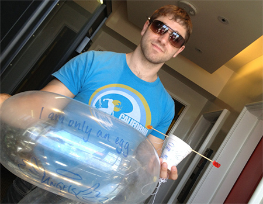 We started the day with an egg-dropping event this morning. Tim came up with a list of the “price” of aiding materials that we could use. Our assignment was to drop eggs from 8th floor to the concrete balcony/platform on the 3rd floor. I wanted to see if frozen eggs work. Sadly my technology needed some improvement. Zohar and Greg came up with using two plastic bags and some tape to contain all five eggs inside of the structure. Overall we used the least Superhero “money” to drop all of our eggs and got a point for the Blizzard team. The Angels got two points for their creativity. Titans and Magic both got points for successfully making alliance with each other to benefit both teams. Guess what the angels used in the picture here? (hint: think about a pun.) My takeaway of the egg-dropping experience is that entrepreneurs should think hard and think early about how to save the company from disasters, but your solution needs to be economically sensible and there are always ways to do it cheap. Basically, you might want to do everything possible to save the company, but is it worth it? Tim told us for every 10 companies he invested in, each with 1 million dollars, about 7 of them fail. Of the three successful ones, one might return 2-3x, another might return 10-20x, and the other one might return 10,000x. It’s the 10,000x return that venture capitalists are really after and they are most likely not interested to spend another million to save the failing ones to get some extra 10% juice out of it. They are most interested in the biggest deals. A side note. Many people are complaining about the scoring systems now. The Angels seem to get easy points for almost everything they do (though they do a good job on many assignments), but the other teams’ efforts seemed to have gotten ignored. Is it just like the real world where the big players get bigger more easily or are we expecting some storms likening the ’08 financial crisis that will shake everything up? I think there might be a lesson to be learned for everyone. However since we don’t know what to expect, better do our best to manage our attitudes to learn as much as possible from the experience. We had a fast business development (BD) and corporate development talk by Don Hoang. His idea is that BD is a special unit of the whole company. You might not know what they are doing and they have a lot of flexibility to work on highly important projects, but you have to trust them and work well with them, as they will help determine the future of your company. CEOs and entrepreneurs often think they can do it all themselves but they fail short. Often it is a good idea to call in professional support before it is too late. It’s important to set aside a BD team outside of the normal corporation structure to function on its own. Later in the afternoon, Buck’s owner Jamis MacNiven came and gave a talk titled “Why Silicon Valley?” My takeaway from this highly entertaining and thought-provoking talk is that it’s a place where a lot of the worlds biggest ideas come out of somebody’s garage and a lot of important deals are made based on a few PowerPoint slides and a handshake. People work very hard and play equally hard and are enthusiastic and optimistic about their work. A whole community of people like that living in a casual, friendly environment is unique. First Day of Transportation Week and Go-Carting Tuesday, April 30, 2013 This morning I had a personal wakeup call from the Canadian mafia—all right it was the Canadian entrepreneurs Kevin Estakhri and Marko Hrelja at Draper U who wanted to practice pitching skills with me at 7am at breakfast. We created a Facebook message group named “It’s all business.” Check out the picture here. This two made the pitching drill a delight.
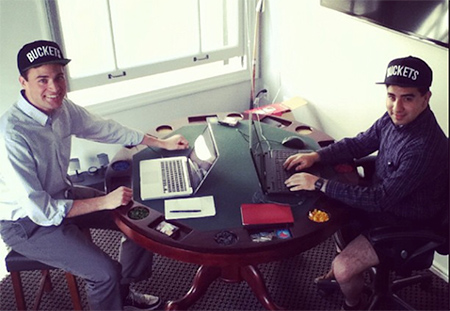 The official program of the day started with an overview of the fast-moving transportation industry by Clement Gires from Local Motion. Local Motion developed a technology that creates a new car-sharing experience through uploading vehicles’ information such as diagnosis codes and GPS data to the cloud and allows users to select among the available vehicles in the registered systems according to their needs. Clement talked about the conundrum of under-used transportation resources that are idle most of the time. At the same time, people complain about the lack of transportation resources. Therefore if entrepreneurs can use integrated data to predict demand and serve the best experience according to the need of the consumers, they can create a good business model that serves a niche market. That’s why companies like Uber became a huge hit.
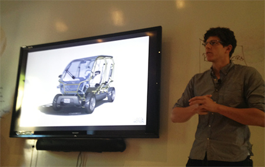 Tim gave us an assignment of dropping eggs from eighth floor to the third floor with as few protecting or aiding materials/tools as possible. We’ll see how it goes. Wink wink ;) The best part of the day is… go-cart racing!!! I’ve been crazy about F-1 car racing since I was a middle school student and almost went to Michael Schumacher’s last winning race in Shanghai in 2006 where he sadly said goodbye to F-1 during his Ferrari time. I was literally a 15-minute drive from the racetrack but was in a boarding summer camp and my teachers didn’t allow me to go. I regretted not climbing out of the school wall to watch that game ever since. Today I chose to wear Ferrari red and raced on Monza track to honor my hero, even though the red racing suit was probably the largest size you can find in the dressing room and it was dangling over my miniature body. But it was Ferrari red!!! (Schumi, you’d better be reading this blog. PS, I love you.) I was thinking a lot when I was racing. That’s probably why I timed the slowest of all the racers on the track. My fastest lap time was about 66 seconds, while the fastest ones were around 27-28 seconds. The second slowest one was about 34 seconds. Bingo! Here’s what I was thinking. If what you need to achieve is success through speed, it is not only the speed that you must focus on. You have to have consistency. Consistent success requires relaxation, concentration, drive and passion. What Michael did and I failed to emulate was that he went wild fast when it was sensible to do so, basically on the straight part of the track he could be the fastest of all, but at the turning points, he was pushing the limit. That makes the largest difference. However he was taking calculated risks. What I mean is that the optimal maximization is within the physical limit of the car but is generally outside of the psychological limit of most drivers. Michael was able to joke about with his teammates or his brother over the radio with the Ferrari team when he was going 200 plus miles an hour! That kind of deep relaxed and concentrated mind enabled him to be more comfortable and smooth at the challenging part of the game and show his teeth when needed. He was not wasting his energy by being nervous before or even during the big moments, though he could gain concentration just to the point that was right. Other drivers slow down dramatically at the turning points, but Michael’s speed was about twice or even three times faster than them in those junction points. Tying this metaphor back to entrepreneurship, we often hear the importance of speed and strength. The best athletes can be our best teachers on how to master those skills. I’m very thrilled to have the opportunity to race with all DU classmates, including our lovely race driver Collete Davis, to build camaraderie among ourselves whiles having a good time. Gregory from my team was surprisingly the fastest driver of all!!! His eyes were a little red when he just finished the race. Hmm… I’m wondering how he thinks about my driving philosophy. What is his secret of driving so fast? (Would he mind sharing?) Coming back to Draper U, Mc Kenna’s dad Miles Walsh brought us pizza and gave a very high-value presentation on business and entrepreneurship. Miles was very result oriented. He gave us a lot of useful tips and agreed to come back to campus to help us deliver better results next week. He outlined strong business presentation format: problem, solution, business model, underlying technology, marketing and sales, competition, team, projections and milestones, status and timeline, summary and call to action. He also said if you only have an elevator pitch to give, focus on heart, mind and wallet (in that order!). If there is only one thing an entrepreneur should present to the VC, Miles would pick the slide on competition and your comparative advantage. Miles believes that as a CEO, you have to do it all and you have to change to improve yourself incrementally. He thinks the whole team should be built along the growth rate of the CEO and each member should be able to duplicate each other to some degree so that they all grow fast together. Frankly, I am not a big fan of this model. It's too static to me. As for building a dynamic startup, one has to be able to take risks to lead through vision, create fast growth and best yet lead a movement so that everyone else will do things according to your vision so that you can leverage on their resources as if it is your own. Impatience is a virtue. If you wait too long, a big corporation will crush you. But I agree with most of Miles’ administrative tips. It was clear that that was his true strength. He outlined four very important questions: 1. How can we make our customers love us? 2. How can we double our sales? 3. How can we reduce our expenses by 20%? 4. How can we improve employee satisfaction 2x? The other point Miles give us is that you can just do what the most successful guys out there is doing and add your 20%. Well, with all due respect I am not too sure about it. It depends on what you are doing right? Most successful entrepreneurs should think about disruptive changes that possibly change the way people live or think and not just make incremental changes within the existing framework of a larger framework. Despite our differences, Miles inspired me to think about my business model. I’ve been talking with a few DU members about business ideas. Some agreements have been reached but it is too early to be shared with everyone through the Internet yet. I’ll write more about it when timing is right ;) Strength Monday, April 29, 2013
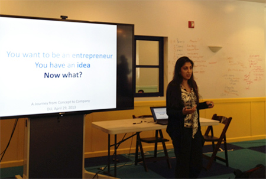 Today’s theme is clearly strength. Draper University alumna from the pilot program Surbhi Sarna, CEO and Founder of nVision Medical, gave a talk about how to take coming up with an idea to founding a company to getting funded. Surbhi raised 3 million dollars for the first round after finishing from Draper U. It’s very nice to have a peer who has just been through what we are going through to give us some insights and tips on how she made it. Surbhi mentioned impatience as a virtue for an entrepreneur. This point echoed Mike Cassidy’s concept on speed as a decisive weapon for startups to quickly gain position and scale up. Surbhi also believes that you need to practice to gain some “impatient” habits to make decisions faster and constantly try things out, meet new people, bring in new ideas, etc. She lets go of people who she feels will not be a good fit of her company early to save her from a lot of headache and pain later on. This is an idea I fully agree with. You have to choose your co-founder and initial employees very very very very very carefully. These people together with you will define the culture of the company. However the most interesting point of Surbhi’s presentation was about strength that comes from how patient or persistent she is when she faces perceived failure or rejection. Surbhi is one of those entrepreneurs who completely devoted their hearts and minds into their beloved projects that they would do everything possible to make things work, despite what other people say or do to you. nVision is an early stage medical device company that is developing a portfolio of novel technologies related to female health. Surbhi’s company focuses mostly on diagnosis and treatment of female infertility caused by fallopian tube dysfunction by leveraging and adapting state of the art technologies from other medical disciplines. Keep in mind this is Surbhi’s first time being an entrepreneur and she is taking on such as huge task that will necessarily include vaginal cancer. With no existing record to prove chances of success and taking on such a difficult task as the sole founder of a startup company, Surbhi faced a lot of rejections when she raised funding. She said she got “no” as an answer from basically everybody initially, but she knew some “nos” are less firm than others, so she just kept going back to them after getting feedback from each person and made improvements after improvements. She would not take “no” as an answer and thought about every possible solution to address the investors and potential customers’ concerns. It might be true that many investors put more emphasis on teams, so eventually Surbhi was able to persuade VCs to take a risk with her and have been managed to run the company alone until the next round of funding which is happening now. Surbhi’s experience really tells us a lot about what VCs see in your company. Here’s what I think. As an entrepreneur, you try to create a world for the goodness of humanity in some way the world has not seen. It might be some fundamental breakthroughs or relatively incremental but still important changes. Either way, you have to change people’s belief in the boundaries of possibility. You are in the frontier of your own perceived possibility with the amount of knowledge you know, which is infinitely close to most people’s belief of impossibility, especially if people don’t know what you know. That process of conversion of people’s beliefs is an interactive test of people’s boundaries. Therefore acceptances or rejections are equally valuable and they just force you to think where and how to enlarge the boundaries. Of course you need to be strategic, but just keep in mind these boundaries are changeable and the entire human history has been a history of enlarging those boundaries. We humans evolve because there is always somebody who believes in changes. To make others believe in your product and your vision, you have to show how much you believe in it yourself. The VCs are just people who are likely to go far enough to fund a testing-stage project before anyone else believes in you. You have to prove to them that you have the character and faith to make this difficult task of perception and reality conversion happen. It is you who they are investing before they can believe in your products. Reflections on the First 10 Days at Draper U Sunday, April 28, 2013
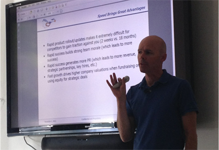 Hello heroes, Ten days have passed since Draper U classes started. This means, for most of us, that it’s time to think about our own businesses. Classes in almost every major university these days are mostly passive. As a student, you read what others have written, take notes on what your professors and TAs have to say, and are tested on how well you follow their points of view, how they contrast each other, and only beyond that you can add a little bit of how you agree or disagree with their opinions. If you have ever written academic papers, you should know how much time it takes to collect pieces of information on what the other scholars have to say. It matters who has said what and which school of thought they belong to. In the entrepreneurial world, however, you are free from pretty much all of that. It’s about how you view the world in relation to how others see it. If nobody understands what you see, it might be too early to bring on the new thing. If everybody sees it, you have probably missed the golden time to do it. Therefore if you believe you’ve seen something that can change the world and some people think you are crazy and some others think you are a genius, you might have gotten it. Don’t worry if it seems that you have no clue where to start. That’s how everybody gets started. If most of the foundational infrastructure is ready and people have been prepped in some way to accept your product or concept after some efforts, why don’t you just give it a good shot? Most of us here have nothing but some passion and some good thinking on how to solve certain problems. At this time at Draper U, most of us are forming the earliest versions of founding teams and trying things out with everyone. We listen to each other’s ideas and decide if we want anybody to be on our teams or if we are going to look for support elsewhere. I seriously believe in hiring slow and firing fast. I am shooting for at least a billion dollar project and I am looking for an A+ player who commits to the project and complements my skill sets. It’s as serious as looking for a husband for me, so I am very cautious. I’d rather start the company alone, define the culture of the company well, and then take my time to look for a co-founder than grab anyone when I am at the program because I feel like I need somebody. I believe my company will exist for a very long time and it’ll be a big deal, so I cannot afford having somebody who I have certain doubts to eventually walk away with a huge chunk of my company without contributing much. I need a technical co-founder at some point, but in the meantime, it seems that I have to believe in myself and create a minimal viable product with other alternatives. I don’t believe the earliest technician necessarily deserves to be a CTO or a co-founder. In today’s world you can get help from many people across the internet on the other side of the world in no time or even start coding or creating websites yourself by using websites that have created the platforms for you. Some people may completely disagree with what I say here. You just have to do what makes you feel comfortable and make it work. You are not in school anymore. Don’t seek approvals. Do it in the best way that works for you. Then the world or half of the world will follow your footsteps. Again somebody might tell you I’m giving you bad advice, but remember all of us, even the most successful VCs or entrepreneurs have failed most of the time. What do we know is truth really? Entrepreneur and Googler Mike Cassidy came in this afternoon to give us a talk on speed in entrepreneurship. Mike’s point of view is that speed brings great advantage. Rapid product rollout/updates makes it extremely difficult for competitors to gain traction against you. He gave the example of product building in two weeks versus eighteen months. The former strategy is to create a minimal viable product quickly and use it to gain traction rather than waiting the perfect product to come out after a long time of preparation. The reality is, according to Mike, you get 80% of what you want from those two weeks of intensive product building, and you can never create a perfect product anyways. You will build stronger team morale, generate more revenue, create more strategic partnerships, generate better PR, and create higher company valuations during fundraising rounds. Mike gave us a few vivid examples of what speed means to him. When he was doing fundraising, he deliberately told venture capitalists that he would only take capital in a given period of time. There was a time when a venture capitalist wanted to close on a deal but Mike has already taken capital from somebody else who agreed to close the deal before his “deadline.” This may sound strange to someone but you simply cannot wait forever as an entrepreneur for all best possibilities to all come true. Product and customer feedback should be your main focus and time commitment. Money will follow you when you do things right and do them well. I take Mike’s message on speed to heart. I genuinely believe the most valuable thing an entrepreneur has is his usage of time. I believe one should leverage resources to get things done efficiently. Meanwhile, most of the time is wasted on things that contribute to your 20%. It doesn’t quite matter if you spend time on those things or not for an entrepreneur to some extent. Hitting that 80% well is already pretty good. There will be a time when you need to be perfectionists, but the early stage of startup needs speed and you need to live with your 80% success. However, on another note, I think at different stages and on different things a wise entrepreneur should pace very differently. I am the kind of person who loves to think about the long term. I think you should designate some time aside just to create long-term benefit for your company despite short-term sacrifices. Maybe we can call that retirement time funds for startups. You should do the same thing to other resources as well. After the speed competition stage, there will be another stage that mostly tests your patience. That will be what our next blog is about: endurance. Hiring Friends and Other Lessons from Strikingly.com Saturday, April 27, 2013
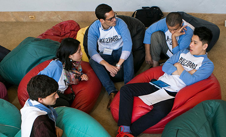 Hello heroes,Today we were introduced to the founders of Strikingly.com who taught us a memorable lesson about entrepreneurship with their own experiences. Strikingly did not become a success overnight. It succeeded after the founders, in their own words, made every mistake entrepreneurs can possibly make. It’s a story about how risk masters come into being by failing and failing until they succeed. The initial team was a few friends and colleagues who wanted to do things they were passionate about after being totally bored by work in the financial sector (no offense). I learned that you shouldn’t hire your best friends just because they are your friends. You shouldn’t hire somebody you cannot possibly fire without breaking the company apart. With the Stikingly team, there was a split, a painful one between two best friends—this eventually resulted in one friend firing another. As a result, they had to avoid meeting each other by going to different countries. One person on the team continued working on the project and gradually created some traction. Then there was a reunion. This time they were determined that they would do this single-mindedly, so they bought only a one-way ticket to San Francisco, with almost no capital other than $15,000 investment ($5,000 each) from themselves and a lot of passion. They found the cheapest room they could find and all three of them crammed in one small room that could barely fit a small bed and a futon. After they put in the most basic furniture, they couldn’t open the door. Two co-founders had to sleep on the same bed for months (they jokingly said they spent more time with each other than with their girlfriends) and they almost didn’t step out of their room to focus only on the product and customer feedback. It paid off. Their single-minded focus helped them build a product catering to customer needs in a very short time, and they broke even in three months. Soon their website became a hit and they started to get so much interest from investors that they had to turn them down constantly. What went right? I summarized the following few points: 1. They launched the minimal viable product and kept improving with customer reviews to perfect the products. They devoted almost all of their energy and time on products (for entrepreneurs, you have a very small team to work with, so choose your battle). 2. They almost spent no time on fundraising and no time on sales and marketing but they used the media to their advantage for good PR work. 3. They used their own money wisely to start building MVP. After building traction they naturally attracted the attention of VCs. Even then they didn’t raise money to the maximum capacity but only got what they needed so that their company was not diluted by newly injected capital. 4. The first thing they did after getting more capital was to cut costs. All co-founders live frugally. They gave each other no salary, only equity. This increases dedication. 5. They work very well as a team. 6. They learn very fast and very well from their failure. It was after they lost the Y Combinator competition that they decided to give up everything to come to San Francisco to work on the product. They worked non-stop on the product and went back to Y Combinator. The second time they got it. They had the same attitude when they provided customer support and approach VCs. Initially they got so many negative reviews that they got “thick skin” to criticism. They took criticism as a mirror to reflect upon areas of improvement. I think this is a very healthy attitude to listen to the content rather than the attitude. Strikingly’s story gives me a lot of insight on what it takes to survive the steep battle of creating a successful company. People say attitude is everything. That is what I see in their story. Scientists as Entrepreneurs Friday, April 26, 2013
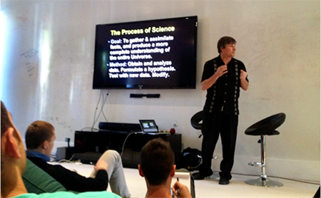 Today we had Adobe training for the whole day. I have nothing too special to write here about that, so I’ll recall something I didn’t write about that happened on April 24.That day, we had the privilege to listen to one of the world’s most prominent astrologists, Alex Filippenko, talk about dark energy and runaway universe at Draper University. Alex was on a Nobel Prize-winning team that got the team leaders winning Nobel Physics laureates in 2011. He is currently a professor at UC Berkeley (how lucky are his students?). Alex is one of the most passionate and eloquent speakers I’ve ever met. He can digest obscure knowledge and explain very complicated physics matters in plain English that a layman can understand. He explained how the method of scientific discovery is very much like that of entrepreneurial experiences. A good scientist, just like a good entrepreneur, focuses on the big picture and doesn’t drown in minutia even though he pays attention to details. He innovates and takes promising risks with resources already available and though hard work converts skeptics to supporters. He manages his team as a good CEO would to his company. He gives additional incentives or “perks” to colleagues in order to improve team morale and productivity. He jumps on leadership positions as the titled leaders of the team might be too busy to focus on some major work in the new promising projects. He welcomes healthy competition to accelerate progress and improve the overall quality of the work. Actually, the Nobel-winning team deliberately split into two so that they could deliver the best quality of work, and then cooperated with each other later to create a larger project to get more funding. Alex believes that if two teams work independently to try different methods to prove the same hypothesis, the agreements in results increase credibility. Meanwhile, after going independently after a while, it is sometimes wise to consolidate resources from several projects to achieve the same goals and to capitalize on innovative opportunities together. Some projects are just too big for one team. Collaboration frees up resources that can be diverted to other tasks. Regardless of team division or cooperation, a good scientist needs to think outside of the box because the biggest breakthrough often requires this. Media Training and Robots Thursday, April 25, 2013
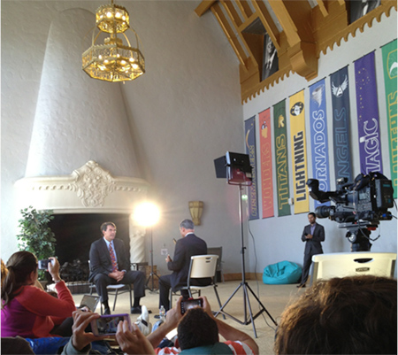 We opened today’s sessions with media training with Raj Mathai from NBC Bay Area. Raj gave us some good tips on crisis planning for a company’s image. He said you need to be prepared to face media or social media frenzy when a company faces crisis. That kind of preparation has to be done ahead of time by singling out a special group of people who would function outside of the normal bureaucratic hierarchy to make quick decisions and face the media uniformly. Nobody outside of this group should talk to the media without consulting the decision-making core of this crisis management group (which generally is the highest level of the leadership of the company and their advisors) to avoid sending conflicting messages that worsen the situation.After the media training, we sat on the beanbags (no surprise!) watching the making of a real-time NBC interview to be aired on the next day. Raj asked Tim a lot of questions on the vision of the school and future of the industry. It is nice to hear Tim laying out the expectations for us in a coherent way. We, DU heroes and world change agents, are going to be given a lot of surprising tasks. Actually, we are only given notice a few days ahead of time of the upcoming schedules and there are plenty of surprises every day (details of the events are almost always a secret). We have a lot of team-building activities and in the end we individually form groups, go by ourselves or match up with outside support to create a founding team in our own startup companies to pitch 2 minutes in front of a panel of venture capitalists. We will be taught business planning, accounting, coding, marketing and do survival training and a lot of sports. We will be asked to read one book a day and give public speeches almost every single day. Tim is planning on creating online schools and expanding Draper University into different parts of the world. I now know that Chinese government has cordially invited Tim to bring Draper experience into China. As the first class, we are having a lot of Tim’s time and other mentors’ support. We are pioneering the way and creating a culture for the future DU heroes to follow. I’m very proud of being part of the guinea pigs and I give kudos to Tim for taking this brave step forward to create an inclusive and open entrepreneurial environment for us. He has opened up his house, his family, his network, his most important partners and his valuable customers for all of us to freely access. We know he doesn’t have to do this at his status. This man has a big vision and a big heart. At noon, I went to the local florist and got myself some orchid and roses (actually the roses were gifts). Here you can have a peek at my room. I love aesthetic beauty and love to bring beauty into my life. Seeing these flowers in my room brighten up my moods immediately. In the afternoon, a robotic friend with the voice and “face” of my friend Greg Wientjes from Stanford greeted me when I walked into the egg room (Greg is the founder of SUpost). I met Greg when we waltzed with each other at this year’s Viennese Ball, so we often joked about it. It is just interesting when the second time I waltzed with Greg, it is with his Robotic body! This robot was designed and made by Anybots and it can be operated remotely through a computer and wifi connection (Greg was in the breakfast room operating the robot).
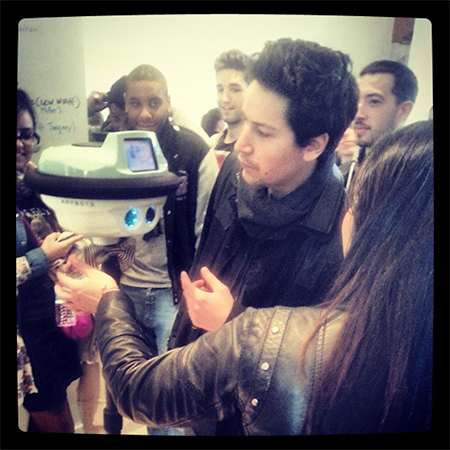 A group of visiting students from France visited us when the robot was playing around with the boys. They were very amused by the scene. After a throughout introduction on most of the usage of robotic machines in industry, agriculture, hospitals and military, we were given twenty minutes to prepare for a presentation on one creative usage of the existing robots today to solve practical problems. The students came up with best friends for the elderly, a dancing DJ, a security guard with a camera, a bouncer, a friend for the blind, a personal shopper in retail, and many more interesting ideas. Hey heroes, what is on your mind? Top 16 Lessons from Draper Day Wednesday, April 24, 2013
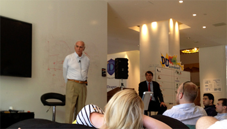 Today is a Draper Day. Tim’s dad Bill Draper and son Adam Draper both came and gave a good talk. As I mentioned before, I read Bill’s book The Startup Game and was really excited to meet the man himself. Bill shared a lot of his insights on entrepreneurship and also his experiences as the chair of Export-Import Bank and secretary of UNDP. I’ll share with you some highlights of what Bill shared with us. 1. Do your due diligence about your funders. Research them the same way they do you. You should definitely ask the venture capitalists what they can do for you besides the amount of capital they can provide. You should consider yourself as a partner seeking a relationship with the venture capitalists. You have as much to provide to them as they to you, so make sure it is a good match and both can gain a lot from the relationship. Don’t sell yourself short and don’t take the first offer without doing some comparisons. 2. Money always runs short, so if you can, ask for a larger amount of money when your company is doing well. Don’t make the mistake of asking for too little money and get yourself into liquidity crisis quickly down the road and have to raise funds again. Ask for a larger amount of money and run with it for longer period of time. 3. Entrepreneurs always underestimate the amount of time it takes to make something work. Double your time frame. Don’t be overconfident and promise the investors something you cannot deliver. This will guarantee disappointment and distrust. Again, you are building a healthy relationship, so trust is extremely important. 4. The keys for entrepreneurship: perseverance, passion, vision, focus, optimism and a lot of healthy humor. 5. You define the culture of the company, so invest in yourself before asking anyone to invest in you.
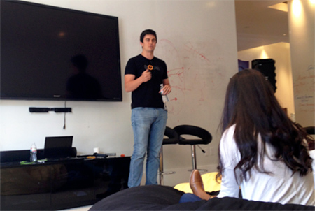 Adam Draper, who is the founder of incubator company Boost, talks about his experience as the fourth generation of venture capitalist/incubator. Adam took a year off of college to go to Australia to play professional tennis. It seems that during that period, he gained some important insights as a young man as to where his life should be. Adam gave us a lot of very good advice from the perspective of a peer.1. He said over time, he learned that you should not ask for permission, but should beg for forgiveness. Don’t worry about making mistakes, as you will make a lot of them if you try at all in life. Just learn from them and move on. 2. You should start practicing pitching now, over and over until you refine it. Literally pitch to anyone who will listen. You must be able to articulate your vision and sell it well as a leader. The leader of a company is always selling something—your product, your company, your brand, yourself. Sell it well. Many people will say you are crazy or your ideas will never work. Don’t worry. Keep working on it and you will likely get somewhere. 3. Your company will likely take a long time to excel, and love is the lasting power when you are worn out and in doubt. When you start a company, every day is likely to be the best and worst day of your life, as there are many expectations that you have to manage—with CEOs, investors, employees, etc. You should make sure people know what you are going to do. 4. Don’t plan. Build. 5. You are the person to save the day. Don’t wait for anyone else to do it. They are never there. 6. Assume all deals will fall through. Until the money is in the bank, assume nothing. 7. Fire fast and hire slow. 8. Ideas mean nothing and execution is everything. 9. Have a vision but be flexible. 10. 90% of the time, it's this little indistinguishable thing that makes your company blow up. You have to try a lot of things. You have to experiment a lot of the time. It's the fact that you're alive at that right time is what matters. 11. Assume that you're the rule and not the exception. A lot of people point to Facebook or Groupon, etc, but that's ridiculous. It takes 10 years for an overnight success. Go through all the apparent overnight successes it generally took them. Running with Heroes Tuesday, April 23, 2013
We were assigned yesterday a project on energy solution in different parts of the world: such as Nome, Alaska, Sealand (hope you’ve heard of the “country” — they have their own visa and passport!), Colorado, Lupita Island, among others. The Blizzard Team takes care of energy planning for Japan. We finally managed not to procrastinate until the last second and worked very hard on this project last night. Here’s our solution: we believe Japan should go nuclear free (as their government is planning to do) and actively seek for renewable energies in wind, marine, solar and volcanic power in the long run and increase import shale gas from the United States and nearby Asian countries in the short run to replace the heavy reliance on oil. We believe Japan’s unique geographic makeup combined with foreseeable technological advancement would allow the country to reach a self-reliant, nuclear-free and renewable future in 30 years. Most importantly, Japan can creatively use the power generated in natural disasters such as typhoon, tornadoes, volcanic eruptions and earthquakes to generate power and electricity. Marine power is another immense resource to potentially to become as cheap as solar and other renewable resources such as solar and wind, which will all become as cheap as, if not cheaper than, coal and oil, 30 years from today. We also made a joke about using fish movement to generate electricity and aeroponics to sustain food supply, but the joke was not received too well. Tim liked the originality of our design but he insisted that Japan should continue using nuclear to generate power. With due respect, though I understand the economic consideration (we don’t want Japan to become a third world country), I still think it is worth taking the risk to stop using nuclear power stations in Japan considering the history and environmental concerns. The breakthrough in the technology of shale gas in the United States should relieve Japan’s need for relatively cheap alternative to nuclear power stations. The reservation of natural gas in the world should sustain Japan’s energy need for at least half a century without straining other countries. This is enough time for the country to develop its own sustainable and green energy resource solutions. At around 7, I went for a 3.5-mile run with about 20 DU students. We ran through the city roads and along the shore of the bay. It was a special experience when all of us heroes running together. You feel a sense of mission and support among each other. I looked around all of us—young, ambitious and optimistic. We are going to face a lot of difficulties along the same journey of making ourselves great entrepreneurs from scratch and we are well aware of that. This is an experience many other people have faced, but I believe we are doing it differently. That difference might be that we are not isolated or working in small groups in the middle of nowhere burning out the last dollars in our pockets and feeling frustrated about not having anyone to catch us if we fall. At DU we are also unsure about where things go (I think even Tim doesn’t know it all and we are all trying our best to make it happen), but you somehow feel safer so you are more willing to try new things because we back each other up. Living here for a week, a lot of groups have started to feel the strain and anxiety the way normal startup teams feel. We have too many things to do in too little time and everybody has to do everything and role division is very unclear. You have to work things out as quickly as you can however you do it. Inevitably you have disagreements and frustration, as not everything works out the way it does, and often times you don’t get rewarded for the amount of time and effort you put into your work. But if you have a group of people that breathe the same optimistic spirit with you and promise each other in front of the “Riskmaster” flag every morning that they will “explore the world with gusto and enthusiasm” and “fail and fail until [they] succeed.” At some point, you will be able to get over the difficulty and say, so it’s hard, so what? We will make our dreams come true, as we are these crazy people who fastidiously run after the sun and never give up. People like us change the world. Team Dynamics and Deathball Monday, April 22, 2013
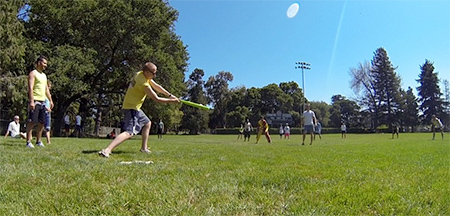 Today we had a group leadership style analysis session and then played a lot of sports. Before we came to the program, we were required to finish a Belbin Team Roles analysis by providing self-evaluation and peers evaluation. What this report does for you is that it tells you how you and your peers see your roles in a team (the one who comes up with ideas, the one who inspires others, the one with rich resources, the one who finishes the job, the expert, etc). You get a score for each of these roles from each of your observers and yourself. Then the system will give you a holistic view of what are the top few roles you generally play at this stage of your life in a team and what are the areas of potential development in the near future. It’s especially interesting to see how your perception of yourself is different than how your peers see you. For example, if you see yourself as a shaper (a leader who determines the direction of a project) and others don’t see it that way, it is time to think about whether your strategies have been effective. Or if you don’t see yourself as a resource collector but others do, then maybe you have some underutilized talents that you can and perhaps are expected to bring to the table. For each team, the ideal situation is always to have different players complement each other so that there is always somebody playing with his or her strength in any given area. This is not only the most effective way to use human resources, but also a way to avoid unnecessary conflicts. If there is significant overlapping of roles, some compromises must be made. Perhaps different people can be project leaders at different times or the team can create a democratic decision-making process. Our team, as many other teams here, seems to have too many creative minds but lacks executive and finishing types of personality. That is one major problem that seems to happen a lot among founding teams. Entrepreneurs need to be aware of that. Don’t just design or plan. Do it. Execute it. Execution is everything. After lunch, we played baseball and deathball. Both were very intense and fun. Tim changed the rule of baseball: if you hit the baseball outside of the field, you have to run backward. That makes everything much more interesting, as you have to plan very differently in this case. We were allowed to change other rules of baseball as we wish. It was interesting to explore how people react when the rules change and how much risk-taking is rewarding and when it is too much. From this game I learned that no matter what the game is going to be, your entire team has to understand the game plan, or at least know when they are in doubt, who to look up to. If you are really exposed to complete chaos, maybe just have every member watch closely what the others are doing and have clear communication so that whenever you see one member is doing something well, all others can emulate this winning strategy.
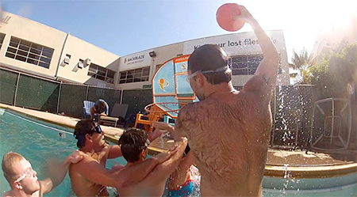 Then there’s deathball. You’ve got to see us play to know how the water basketball game got this dreadful name. We played very fiercely. Tim was in the swimming pool playing like a beast in three different games so he played with or against every single member here. He showed us how hard a champion worked. He didn’t let go of any points and slammed the baskets whenever he could. Our response? Stronger, faster and higher!!!! Point after point we battle against each other above water, in the water and on the bank (yes!!!). We did everything: snatching the ball, jumping onto somebody, blocking the basket, moving the basket and group attack, etc. That was a glorious time. My best memories of the game were to stop Tim and Michael from scoring (both men are around 6”6’ and very strong and I am about 5”2’). Kelsey, a slim girl from the Angels team, scored the most among all players in DU! After deathball, we all went back into the lobby to sing together Tim’s theme song “The Riskmaster.” Fearless, this is DU spirit. Sports and Entrepreneurship Sunday, April 21, 2013
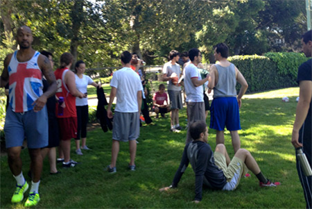 We had our first NFL training today. Mike Tauiliili Brown, a Duke alumnus who was a professional linebacker with the Indianapolis Colts, led the training session. We did a variety of warm-ups, and speed and flexibility training. Zohar probably slept late, so he didn’t show up to the meeting, therefore the rest of us had to cover the loss of manpower by having somebody running twice for every activity. The first three teams who finished the group relay activities could rest while the rest of us did pushups or sit-ups to strengthen our bodies and minds. However, to get the first finishers status, we had to make a distinct team sound loud enough for the judges to hear it. We are not the most athletic team overall but we tried very hard and had a good time. There were a few occasions that we got to be the top performers but we were not able to create a uniform team sound for the judge to take notice. Frankly this was a little frustrating for me, because our team really cares about each other but we are shy and more introverted people, so it takes extra work and time to communicate our needs to each other and even harder to outwardly express our team spirit because we don’t like to show our deep feelings to everyone. I think this is okay because every team has its own distinct feature and there are some tasks that suit some teams better than others. However, I do think we need to work harder on building team spirit and affinity. I’m still trying to figure out what the best way is to motivate everyone and get everybody’s talent noticed within Team Blizzard to create a team that has such powerful effect that is bigger than each of us combined. I want to build a great team that helps each of us succeed and make lasting friendship perhaps for a lifetime. This is only the first week, so we still have some time to figure things out. I have faith we are going to do well. I have some thoughts on sports and entrepreneurship. I believe it is critical for entrepreneurs to take good care of their mental and physical health and it is a great idea to dedicate some time to sports on a regular basis (if possible, daily). I cannot imagine anyone handling so many things and so much stress without being healthy and fit. It just won’t work for the long term. My personal opinion is that entrepreneurs can not only de-stress through workout and sports, but also learn to connect better with their bodies and train themselves to concentrate, to be patient, to work hard, and to make consistent progress. That great feeling of triumphing over your weaknesses, fear and self-doubt is transferable from sports to other things. You can make great friends through sports too. You learn about each other’s leadership style, dedication level and commitment level. Certain sports also teach you to be optimistic and think strategically. I highly suggest dedicating your time to play one sport that requires precision and strategic planning, and another one that is more fun and helps with creativity and spontaneity. Better yet, one could do some team sports and some serious personal training. I like to do something over and over until I become virtuoso at it. In my 101-thing list, I promised myself I would become an expert in at least one sport and one game. I plan on getting really serious about sports at Draper U. We will see how far I’ll go. I’d like to challenge myself on this. Working Through the Fear of Failure Saturday, April 20, 2013 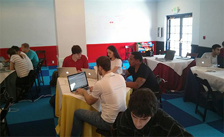 Coding boot camp at Draper University Hello heroes, How are you doing today? I myself am feeling great! I sleep really well these days. As a student, not having to do homework really feels great, so I cherish every moment of such freedom. I wonder if what Tim says really makes sense—that “A”s shouldn’t just be awarded to those who manage not to make any mistakes but to those who think hard and try hard to bring value to the table even after failing repeatedly. Without the concerns of getting a bad grade in areas I’ve not been extremely good at, I actually can feel comfortable challenging myself doing many things I never thought I was capable of doing. For example, this morning I woke up at 5 o’clock naturally, did a one-hour cardio workout (at a lower pace), finished a lot of work, and had a good breakfast (We have breakfast every day here. It’s a good habit and it helps you a lot, believe me). In my 101-thing list, I wrote down that I will cultivate good habits and challenge myself physically. As I seldom went to gym before, this is a big step for me. 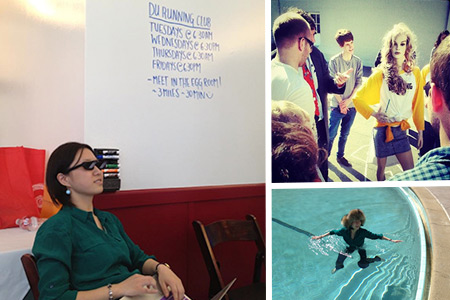 Draper University antics (clockwise, from left): Modeling cool glasses that have reflection mirrors so you don’t have to bend your neck to read a book or type on a computer; making a new friend (Tim gave us an assignment to use local resources to create puns of human body parts. That’s when Team Magic introduced Ruby from across the street. She became a new member of the family); taking a dip in the pool after the coding session. Later, I joined the class for a coding boot camp. It was a full day of coding workshop in basic HTML and CSS led by Alex Wong from Ender’s Fund. I’m thankful that Draper U included foundations in coding for us, because entrepreneurs come from different technical backgrounds and some founding members rely too heavily on one technical co-founder or their technical team for some work that they can potentially finish by themselves. I like this attitude that we have to set the foundations right so that we can break from that fear. We only had one day to do it but deep concentration and good team spirit help greatly. I actually learned coding before when I was at Duke as an undergrad. It was Python. That class was just like in this one: some students are so much better at coding than others. Perhaps because my undergrad class was much larger, I felt that only the most advanced students (who in my opinion should not take those beginner’s classes as they are wasting their time) who answered every question correctly got most of the attention and class time. Once they set the speed and tone, it was hard for the other students to follow. In the end, most study sessions just became a copying session as the class sometimes moved so fast that many students never got the foundations right. Alex and other students here were so patient with me they literally helped me code by code until I understood. Of course, it was impossible to cover everything in one day and we only covered the basics, but I got a lot of confidence in coding and this session really got me interested. I’ve heard other students like our race driver superstar Collete Davis also said this coding session was a breakthrough to her. I cannot agree more. In the evening, when James Schuback and I played ping-pong, I told him I’d like to learn more about coding. James happened to be a coding geek so he agreed he’ll be my coach for coding and video games (just got interested before coming to Draper U, didn’t get to play when I was a studious student back in China, never played in college, now I want to play!!!!) to trade for ping pong practice sessions with me. It was a deal!
PS: Neither James nor I are good at ping pong. The last time I played was 17 years ago. We want to see if we keep playing for three months thinking only about improving and not about scoring, how good we can get by the end of the session. For 17 years I never challenged myself to play it again like I did when I was a little girl. I was not good at it naturally and I gave it up. Now it’s time to pick up old passion. No way to fail anyway. Family Values and Business Values Friday, April 19, 2013
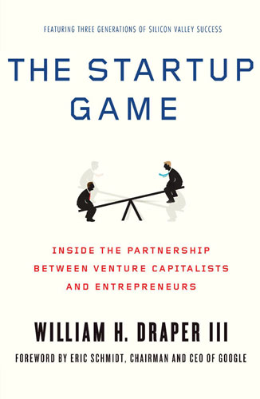 Hello heroes,After the frenzy of yesterday’s VC pitches, we were given the homework of presenting chapters of books assigned to us before the beginning of the program. I was on a three-week vacation and only read most of the book written by Tim’s father, Bill Draper. The book’s name is The Startup Game. I have to say in the beginning I thought it was just one of those books you have to read because the author is related to the founder of the program, but when I got into the pages I was deeply inspired and engaged. I couldn’t stop reading even though I was extremely tired on my 19-hour international flight. I don't want to spoil the content of the book for you. Entrepreneurs and heroes, you have to pick up the book and read it page after page yourself. You will see the business and the people in this field very differently. You will see how much sincerity, love, courage and dare it must take the founding generations to make this business thrive, and you will cherish the opportunity given to you almost freely at a place like this and at a time like this. You need to respect the people and forces that made Silicon Valley possible for us. When I was reading the part about Bill’s father’s involvement in Berlin airlift, I was just on a trip back from Berlin and sitting next to me was a German man who seemed curious about the book that had me giggling and crying from time to time. I told him the story. It looked like he was in awe too. It’s just one of those big moments when you are just thankful that a good entrepreneurial mind found creative solutions to save lives, whatever it takes. This book teaches family values, as I can clearly see from Tim’s value system, and also business values. In this small place where everyone knows everyone, trust and reputation are paramount. It’s about your character. It always is. (I’ll leave out the presentation on books. We learned basic finance and great business values. All teams did a good job.) A side note on this. The venture capitalists’ business is changing dramatically too. With the involvement of angel investments and crowd sourcing, the pie is re-divided and many VCs are losing their grip. Tim’s approach is probably having more and earlier engagements with young entrepreneurial minds to foster a community of world change agents. He might expect by immersing all of us into the best resource pool, some of us will make it super big and that will not only be the biggest fish he catches but the biggest fish he raises. That must be very satisfactory when it all happens. He’s having a lot of fun with this. We are too. How this will work eventually I am still not sure. What I feel for sure is that I always know that I have a historical mission and a clear vision that one day I will do large-scale transformative changes in traditional industries through businesses and public sectors. My feeling is getting stronger and stronger that things are integrated so that I am able to be part of the change. I always want to make it happen. Now I can. Another high note of the day was the presentation given by the mayor of San Mateo David Lim. He is one of the youngest and most exuberant mayors I’ve ever seen. Actually it turns out that Mayor Lim, who prefers to be called David, is only a part-time mayor and is a full-time attorney in San Francisco when he is not on duty. He joked about himself as both the mayor and the staff. David talked about social entrepreneurship in the public sector. I resonate with that perspective as well. Bill Draper mentioned in his book, which I agree with, that the value generated by social entrepreneurs like China’s Deng Xiaoping and private entrepreneurs like Bill Gates and Steve Jobs are probably equally large and important. David asked us to come up with creative solutions to solve San Mateo’s public parking problem. It turned out that building up isn’t an option because of political complications. I came up with the idea of building underground parking spaces and lease out partial usage rights to developers since it is too expensive to build the underground facilities otherwise. It turned out that there is potentially a price limit to the parking space that is preventing the developers from wanting the deal. Now I leave the question to you guys. Any great ideas out there? Pitching to Tim Draper Thursday, April 18, 2013 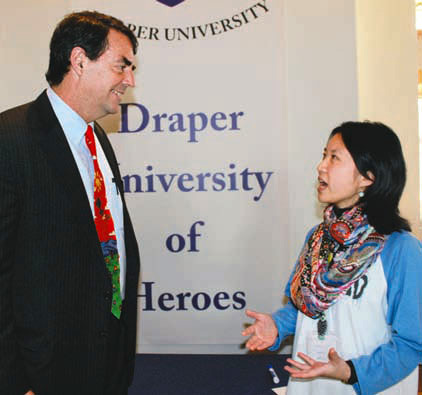 Grace speaks with Tim Draper Today is very exciting because it is a daylong pitch session! We get to watch and participate in the evaluation and Q&A session of 8 startups pitching to Tim Draper (DFJ) real time. Tim will use our evaluation and our questions to help him make informed decisions. I think this is an important feature where Draper University differentiates from traditional MBA programs or business schools. Entrepreneurs have an insider’s view at how deals are made, compare by themselves what are the effective pitches, identify the leaders of the industries, and know what level of competition they are getting from peer entrepreneurs. Engaging in eight pitches in a row was no easy task. I vaguely remember I learned from Heidi’s class that some VCs can listen to 20 pitches in a day. I don’t know how they manage that. Even if it is your first pitch as an entrepreneur, it could be the VCs’ 20th of the day. They may have seen many other entrepreneurs, including your biggest competitor. They may have accumulated good data and smart business ideas from other firms, have some top notch entrepreneurs and scientists explaining similar technologies to them, and are probably even funding your competitors. Of course, perhaps you are pitching them the best ideas they’ve ever heard of but they are not pleased with the team or are not interested in getting into this industry. Therefore, my personal understanding is that the entrepreneurs tend to overestimate the value of their products or companies because they’ve been working on them for so long, but VCs like Tim are looking for the biggest shot in the long term. They are only willing to take a risk if you are able to show that your team, your product and your ideas are going to carry you far and be able to compete with everyone across all industries as one of the best long term investments with the strongest growth potential. You need to let VCs feel that you have that drive and ability to thrive despite them, as the VC next door might want to compete to provide you a better deal. As there are so many uncontrollable factors in any given pitching session, I think it is worthwhile to keep trying until you succeed. I also think that pitching sessions can be a valuable resource pool to know your strengths, weaknesses and competition. Maybe the VCs have ideas to match you up with someone who can complement your strengths if you two are both open-minded about it and would not fund either of you until you two work with each other to come up with a better idea or product. You never know!
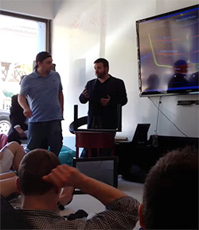 During the pitch event, Tim asked us to think about where would we invest 1 million dollars if we were VCs. The class seems to differ quite a bit on the top performing teams but uniformly vetoed a project that was cool but felt more like a toy that would be in fashion for a bit and fade out quickly afterwards. Our criteria for judgment are basically team, traction, market size, competition, business model and potential for the company, among others. Tim says that he is wary of companies that got everyone on board to vote yes for them as those deals tend to be too late. The biggest disruptive forces tend to bring in a lot of zeroes. Not zero revenue, but it is so lean that it drives one or several elements of traditional industries to be out of the historical theatre. We also learned from Tim and many VCs like himself don’t like companies that seem to have planned for an exiting strategy from early on. He doesn’t like companies that don’t shoot for the long-term growth but just want to develop to a point to be acquired by somebody else. He’d rather see entrepreneurs fight for their dreams to make something big come true. 101 Things to Do Before You Die: First Day at Draper University Wednesday, April 17, 2013
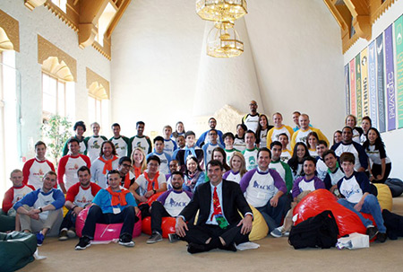 Hello heroes, Welcome to Draper University! My name is Grace Wang, a participant of the inaugural class of DU. Now I am writing from my dorm room to you about my experience here. Actually, this is the first blog I’ve ever written in my life so I’m a little excited and nervous about both telling you the experience at Draper U and writing this blog! A little background about me. I’m a first-year master’s student at Center for East Asian Studies at Stanford. I went to Duke for undergrad in History and Political Science (I also studied a lot of Psychology), interned in DC, but I’m always curious about entrepreneurship and business and have worked with some groups at Stanford and on the East Coast on several startup ideas (made some progress in creating products but things are still at the rough stage). In my Winter Quarter at Stanford, I took Heidi Roizen’s class The Spirit of Entrepreneurship and the ETL series, where I met Tim Draper, who is the founder of Draper University and DFJ. I was impressed by the vision and energy of Tim and got excited about the program so applied and luckily got in with a full scholarship to the first official class. We have 44 students attending the first class. Half of them are international students, representing five continents. I am the only Chinese citizen here. We also have young entrepreneurs from Canada, Egypt, Estonia, Germany, Switzerland, Guatemala, etc. Many of the students have actually started their own businesses; others are involved in startups or other highly innovative programs in school or non-profits. Many are talented in music. Some dance really well. Of course, one would never be surprised by the technical talents you see here every day. It’s a humbling experience. It’s also a fun experience. And… did I mention it is also kind of intense? There is so much to learn from people who see the world differently from you. We work hard, debate hard and mostly have a lot of fun doing difficult work. [The first seven days of this blog are written in the second week, so I already have a good taste of what working in teams with these folks are about.] On our move in day (yesterday), we got a homework assignment (ok, actually two): write a short bio within the length of a twitter post and write down 101 things you would like to do before you die. My 101-thing list is an eight-page single-spaced essay that took me several hours to compile, but my twit was succinct: “learning, expanding, inspiring.” My roommate Isabel and I had a great discussion about our visions and needs in life. Both of us put down a lot of things about values, love, happiness, friendship and family life in our list. I believe the best entrepreneurs are not those who only keep their eyes on the money. There are other industries that will help one achieve that goal with less pain. You do it because you have a dream and you are determined to realize that dream to better the lives of millions, if not billions, of others or shape the society according to some value you faithfully believe in. Then it’s all hard work and tears until one day you might see some dim lights of success. You have to believe it is worth it and never ever ever ever give up. You must master yourself to make it happen. That’s just my opinion. Just read the Superhero Oath, you’ll know why I identify with the values here a DU. I take these things very seriously. I can tell the others too. On the first day, we were broken into teams of 4 or 5. I’m on the Blizzard team. Our team consists of me, superdad Ahmed from Egypt who started several businesses already, the super smart 17-year-old Zohar, web designer Alex from London and Greg from Switzerland who has a finance background and surprisingly speaks Chinese well. In the future blogs, you might hear a lot about team building from me, so remember these names! I had to miss the first talk by Steve Jurvetson on Moore’s Law as I had to meet my advisor Frank Fukuyama early in the afternoon. I heard it was very good. I’ll update you with more info after watching the video. However before his talk, at lunch, we did our first nervous group presentation on the prediction of the future of a certain industry using Moore’s Law after 20 minutes of preparation. Our team spent 15 minutes on brainstorming, 5 minutes to organize our thoughts, and thought we had the best idea on earth. Then it turned out that everyone had equally great ideas and we went over time (because I talked too much I think). So we got a point and lost a point. Hey one learns doesn’t one? Later in the afternoon, after I came back from my advisory meeting, I got right in the middle of an interesting football/volleyball/handball/soccer/nameityourself ball game. The rule is basically you change the rules as you go and the Blizzard team got split up into different groups to be the disrupters. I had a wonderful time messing things up J and learned the basics about American football. My takeaway from this game is that you can’t always be a follower in a static industry as an entrepreneur. Rules are made to be changed as long as they are legal and moral. Sometimes you ride the wave as new major disruptive forces come along and sometimes you create the waves or disruptive changes yourself. That’s how Google, Facebook, Twitter got big. To think big you need to be ready to play along even if the rules are new and unclear. That is a perfect opportunity for you to create new values. After the ball game, I cruised around San Mateo with my new friends and had a great dinner. It’s a wonderful town! The city is so clean and safe with fewer cars than many other similar sized-city in the United States. Quiet and comfortable and yet it is also multicultural and has enough interesting shops and restaurants for you to enjoy the convenience of city life. The university locates in the old Benjamin Franklin hotel, which is in the quieter side of downtown. To me this location is ideal, as you can hop on a Caltrain to go to pretty much any nearby cities to attend entrepreneurial events but you are not buzzed by craziness and you can build real friendships and connections here with VCs and other entrepreneurs or focus on building your own products. I went to sleep early as I’ve decided to sleep more and live healthier lives. Yes, this is on my 101-thing list I promised myself to do. Bye for now! |
|


9110 page views